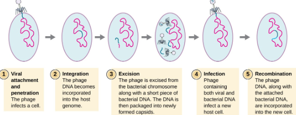

Callout
Viruses
A virus is a submicroscopic infectious agent that replicates only inside the living cells of an organism. Viruses infect all types of life forms, from animals and plants to microorganisms, including bacteria and archaea.
Viroids
Viroids are the smallest infectious pathogens known. They are composed solely of a short strand of circular, single-stranded RNA that has no protein coating. All known viroids are inhabitants of higher plants, and most cause diseases, whose respective economic importance on humans varies widely.
Prions are misfolded proteins with the ability to transmit their misfolded shape onto normal variants of the same protein. They characterize several fatal and transmissible neurodegenerative diseases in humans and many other animals.
Why viruses are important?
Viruses are responsible for many human diseases. Some viral diseases, such as the common cold and chickenpox, produce relatively mild symptoms. Others, such as AIDS, cholera, and rabies, are much more serious and can be deadly. Viral diseases are significant not only because they affect individuals, but also because of their ability to spread. Some, such as the influenza virus, are transmitted easily from person to person and can infect millions of people in a relatively short time.
Callout
Characteristics of Virus
Viruses have an inner core of nucleic acid surrounded by protein coat known as an envelope.
Most viruses range in sizes from 20-250 nm
Viruses are inserting (nucleoprotein) filterable agents.
Viruses are obligate intracellular parasites.
Virus occupy a space in between living and nonliving, because they are crystallisable and nonliving outside the body of host
They are responsible for a number of dreadful diseases in human and plants.
Click and Reveal
Why are viruses considered to be non-living?
Select to learn more.
They are classified as non-living because they do not have the key characteristics of living cells. However,
viruses do share one important trait with living things: they reproduce.
The Different Reproductive Cycles of Viruses
